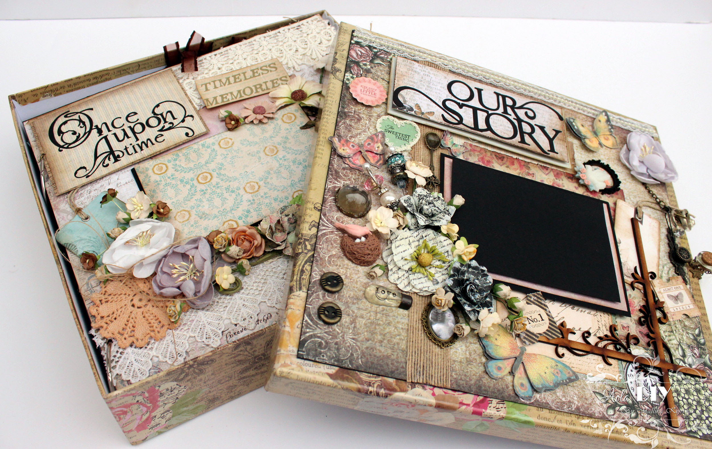

Hit the play button while you read our inspiring story
My story is divided into 3 parts:
Part 1: (Re) Igniting My Passion
I come from a small town in Northern India. Colors always excited me, and I fondly remember making pretty clothes for my dolls as a child. My parents, however, pressured me to take up sciences and study engineering, in which I had no interest. I secured a software engineering full-time job at the end of my junior year (2011) via on-campus recruiting. However, my heart was strongly against it, and I decided to try out what my heart really wanted to do crafting! I did not have any money and my parents categorically denied me any support. So in order to earn money to buy my craft tools/supplies, I started making cards and selling them to classmates during senior year. The response was overwhelming. I received great feedback & encouragement, there was strong demand for my handmade cards, and most importantly, I loved my work. I was convinced that this was what I wanted to do fulltime after college, but would my parents allow it?
Part 2: Pursuing My Passion Full-time

With strong conviction of my passion for crafting, I informed my parents of my decision to become a full-time crafter - to their chagrin (they recommended I pursue an MBA instead). Without seeking any monetary support from them, I resolved to prove that via crafting I could earn more than what the best MBA graduate in India earns. There was no turning back. I moved to New Delhi and started my business from scratch from a rented studio apartment. I was a one-woman army managing all aspects of my business, sourcing orders for scrapbooks, high quality cards, layouts, altered art and home decor items (via my company blog/Facebook page/exhibitions/word-of-mouth). I started importing supplies from USA and China, creating, packing and shipping orders, and above all, receiving messages of praise and gratitude from happy clients. I worked extremely hard, 7 days a week, and loved it! Within 6 months, I had achieved what I had set out to do made a name for myself among the top crafters in India, continued to improve my skills as a crafter, and proved to my parents that crafting could be a legitimate (and lucrative) occupation. The biggest craft company of India (Crafters Corner) chose me as their Design Team member via which I inspired several crafters. I also started teaching students ranging from 6-56 years of age one on one. Craving for growth, I started researching the logistics required to teach a large audience. I signed up for a seminar on gift-wrapping being held at a 5-star hotel to learn how such events were organized, and that day turned my life 180 degrees...
Part 3: Continuing My Passion from USA
After the completion of that seminar, I was introduced to a gentleman at that hotel in an arranged marriage setting. It was wonderful meeting him. The next morning, my parents flew in to Delhi and by the end of that day, my marriage had been fixed! The next three months were a whirlwind, I put a pause on my 1-year old business to get married and move to San Francisco, CA. I promptly set up my new home in space-constrained San Francisco where we rent a small apartment. I converted our hall/kitchen into my craft studio, purchased new tools and machines, and re-stocked my inventory with gorgeous craft supplies.Now that I am happily married with no more pressure to earn money, I have been focusing on improving my work and learning new skills. I have been awarded an opportunity to be a guest design team member for Miriam's Crafting Blog for the month of April. I still maintain a large following of loyal Indian clients for whom I continue to fulfill orders. I also conduct in-person as well as live online classes. Recently, a crafter from India was visiting San Francisco and sought me out to take classes from me for 8 hours each day, 2 days in a row (instead of sight-seeing!). To me, this was another validation of the skills I have developed over the past 3 years. Oh, and this lady has been teaching crafts in India for the past 15 years!Crafting is my passion. I love anything and everything that is craft-related. I am a versatile crafter and I continue to enhance and evolve my style with time. My biggest strength is my ability to work with any media and with both limited as well as abundant supplies. Not a single piece of paper gets wasted in my craft studio. I love various styles of crafting including shabby chic and vintage. I am extremely hard working I persevered relentlessly to establish and grow my business in India. I moved to Chicago in August 2014 and continuing my passion from here. I hope the above paragraphs gave you a good insight of who I am, examples of my dedication, my hard work and my resourcefulness.